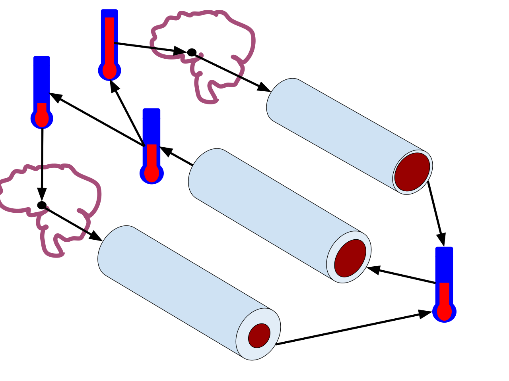

Nguyên Lý Hormesis: Cách Áp Lực Nhiệt Có Kiểm Soát Tái Lập Trình Sinh Học Của Bạn
Con người tiến hóa trong môi trường tự nhiên với những biến đổi nhiệt độ nóng lạnh khắc nghiệt, nhưng cuộc sống hiện đại với điều hòa không khí giữ cơ thể chúng ta trong vùng an toàn nhiệt 21°C–24°C suốt 24 giờ mỗi ngày. Bằng cách chủ động đưa cơ thể tiếp xúc với các đợt nhiệt nóng (Xông hơi Sauna) và lạnh (Ngâm nước lạnh – Cold Plunge) ngắn hạn có kiểm soát, bạn kích hoạt một cơ chế sinh tồn cổ xưa gọi là Hormesis (Thích nghi Liều thấp)—nơi áp lực nhiệt cấp tính đánh thức hệ thống sửa chữa tế bào, tăng độ đàn hồi mạch máu và nâng cao sức bền thần kinh.
Khi nhiệt độ da và nhiệt độ lõi cơ thể dịch chuyển khỏi điểm cân bằng 37.0°C, các thụ thể nhiệt lập tức truyền tín hiệu khẩn cấp về vùng trước thị của vùng dưới đồi (anterior hypothalamus), khởi phát một chuỗi phản ứng sinh lý toàn thân hiển thị ngay lập tức trên biểu đồ nhịp tim, HRV và nhiệt độ da của đồng hồ thông minh.

Trụ Cột 1: Tiếp Xúc Nhiệt Nóng Chủ Động (Sauna) & Tuổi Thọ Tim Mạch
Ngồi trong phòng xông hơi khô kiểu Phần Lan ở nhiệt độ 80°C đến 95°C (176°F–203°F) trong 15 đến 20 phút không chỉ là thư giãn thụ động—đó thực sự là một buổi tập tim mạch không cần bước chân:
- Mô Phỏng Cardio Zone 2 & "Thể Dục Mạch Máu": Khi thân nhiệt tăng lên, vùng dưới đồi làm giãn rộng các mạch máu dưới da (giãn mạch ngoại vi) và tăng tiết mồ hôi (
0.5 đến 1.0 lítdịch mỗi phiên). Để bơm máu ra bề mặt da làm mát cơ thể, nhịp tim của bạn tăng lên mức120–150 bpmvà cung lượng tim tăng gần gấp đôi—tương đương với một buổi đi bộ nhanh ở vùng Zone 2 đồng thời làm giảm độ cứng thành động mạch! - Protein Sốc Nhiệt (Heat Shock Proteins – HSP70 & HSP90): Áp lực nhiệt kích hoạt mạnh mẽ các Protein Sốc Nhiệt, những "người bảo vệ phân tử" bên trong tế bào giúp gấp cuộn lại các protein bị hư hỏng, ngăn chặn sự tích tụ mảng bám protein độc hại (liên quan đến bệnh suy giảm thần kinh) và làm chậm quá trình teo cơ khi bạn phải nghỉ tập do chấn thương.
- Nghiên Cứu Tuổi Thọ Kuopio Kinh Điển Tại Phần Lan (Laukkanen et al., 2015 — JAMA Internal Medicine): Các nhà khoa học đã theo dõi 2.315 nam giới Phần Lan trong suốt hơn 20 năm: - So với nhóm chỉ xông hơi 1 lần/tuần, những người xông hơi 2–3 lần/tuần giảm được 27% nguy cơ tử vong do bệnh tim mạch. - Đặc biệt, nhóm xông hơi 4–7 lần/tuần (tối thiểu ≥ 19 phút mỗi lần) ghi nhận mức giảm 50% biến cố tử vong tim mạch, giảm 40% tử vong do mọi nguyên nhân, và giảm tới 65% nguy cơ mắc bệnh Alzheimer!
Trụ Cột 2: Ngâm Nước Lạnh (Cold Plunge) & Nguyên Lý Søberg
Bước vào bồn nước lạnh hoặc tắm vòi sen lạnh ở nhiệt độ 10°C đến 15°C (50°F–59°F) kích hoạt phản xạ thần kinh tự chủ và chuyển hóa theo chiều hướng ngược lại hoàn toàn:
- Bùng Nổ +250% Dopamine & +530% Norepinephrine (Šrámek et al., 2000): Ngâm mình trong nước lạnh kích thích các thụ thể lạnh trên da và nhân lục (locus coeruleus) ở não bộ, làm tăng nồng độ norepinephrine trong máu lên tới 530% và dopamine lên 250%. Không giống như cơn hưng phấn ngắn ngủi rồi tụt dốc của cà phê hay đường ngọt, nồng độ dopamine sau khi ngâm lạnh tăng lên êm ái và duy trì ở mức cao suốt 2 đến 3 giờ liên tục, mang lại sự tỉnh táo sắc bén và tâm trạng phấn chấn.
- Kích Hoạt Mỡ Nâu (BAT) & Ngưỡng 11 Phút Của Tiến Sĩ Søberg (Søberg et al., 2021 — Cell Reports Medicine): Nhà nghiên cứu chuyển hóa người Đan Mạch Tiến sĩ Susanna Søberg đã chứng minh rằng chỉ cần tích lũy tổng cộng 11 phút Ngâm Nước Lạnh mỗi tuần (chia làm 3–4 lần, mỗi lần 2–3 phút) kết hợp với 57 phút Xông Hơi Nóng mỗi tuần (3 lần × ~19 phút) giúp gia tăng mạnh mẽ hoạt tính protein UCP1 trong ti thể Mô Mỡ Nâu, tăng độ nhạy insulin và nâng cao tốc độ trao đổi chất cơ bản.
- Nguyên Lý Søberg ("Kết Thúc Bằng Nước Lạnh" Để Đốt Mỡ): Khi bạn kết thúc buổi tắm tương phản nhiệt bằng pha nước lạnh và để cơ thể tự khô, tự làm ấm ngoài không khí (thay vì bước ngay vào vòi nước nóng), cơ xương và Mỡ Nâu buộc phải tự sinh nhiệt thông qua việc đốt cháy đường glucose và axit béo tự do để khôi phục thân nhiệt lõi.
| Phương Pháp Nhiệt | Dải Nhiệt Độ Lâm Sàng | Liều Lượng Tối Ưu Mỗi Tuần (Søberg & Laukkanen) | Thời Điểm Vàng Trong Ngày Theo Nhịp Sinh Học & Thiết Bị Đeo |
|---|---|---|---|
| Xông Hơi Khô (Sauna) | 80°C – 95°C (176°F – 203°F) (hoặc Hồng ngoại 60°C–65°C) | 57+ phút / tuần (3–4 buổi × 15–20 phút) | Sau Buổi Tập Hoặc Buổi Tối (90–120 phút trước khi ngủ): Cú sụt giảm thân nhiệt lõi sau khi bước ra khỏi phòng xông giúp tăng mạnh Giấc ngủ Sâu! |
| Ngâm Nước Lạnh / Tắm Lạnh | 10°C – 15°C (50°F – 59°F) (Lạnh gây thử thách nhưng vẫn hít thở an toàn) | Tổng cộng 11 phút / tuần (3–4 buổi × 2–3 phút) | Buổi Sáng Hoặc Đầu Giờ Chiều: Ngâm lạnh làm thân nhiệt lõi tăng lên sau đó (phản xạ tự làm ấm) và đẩy cao dopamine—tránh ngâm ngay sát giờ đi ngủ! |
Cảnh Báo Quan Trọng Cho Người Tập Tạ: Tuyệt Đối Không Ngâm Đá Ngay Sau Khi Tập Tăng Cơ!
Nếu mục tiêu trọng tâm của buổi tập hôm đó là phát triển khối lượng cơ bắp (hypertrophy) hoặc tăng sức mạnh tối đa, có một sai lầm thời điểm bạn bắt buộc phải tránh.
Trong một nghiên cứu sinh lý học nổi tiếng công bố trên tạp chí Journal of Physiology (Roberts et al., 2015), các nhà khoa học đã so sánh hai nhóm nam giới tập tạ thân dưới suốt 12 tuần: một nhóm ngâm nước lạnh 10°C trong 10 phút ngay sau khi tập tạ, nhóm còn lại đạp xe thả lỏng nhẹ nhàng:
- Nhóm ngâm nước đá ngay sau buổi tập tạ có mức tăng trưởng khối lượng cơ bắp và sức mạnh thấp hơn hẳn so với nhóm đối chứng!
- Tại sao? Tập kháng lực tạo ra một phản ứng viêm cấp tính lành mạnh (IL-6, kích hoạt tế bào vệ tinh và con đường tổng hợp protein mTORC1) bên trong các sợi cơ bị rách vi thể. Việc nhảy vào bồn nước đá ngay lập tức làm co mạch máu và dập tắt tín hiệu p70S6K/mTOR—vô tình xóa sổ chính tín hiệu đồng hóa xây dựng cơ bắp mà bạn vừa đổ mồ hôi tạo ra!
Quy Tắc Cách Quãng 4 Đến 6 Giờ: Nếu bạn tập tạ để phát triển cơ bắp và sức mạnh, hãy chờ ít nhất 4 đến 6 giờ sau buổi tập tạ (hoặc dành việc ngâm nước lạnh vào buổi sáng ngày nghỉ / ngày chỉ tập cardio) trước khi bước vào bồn nước đá. Ngược lại, Xông hơi nóng (Sauna) ngay sau buổi tập tạ lại hoàn toàn có lợi 100%—giúp tăng lưu thông máu, kích thích hormone tăng trưởng (HGH) và Protein Sốc Nhiệt!
Góc Nhìn Thực Tế Trên Thiết Bị Đeo: Sauna & Ngâm Lạnh Tác Động Thế Nào Đến HRV?
Khi bạn ghi nhật ký xông hơi và ngâm lạnh trên WHOOP Journal hoặc gắn thẻ trên Oura Ring, bạn sẽ quan sát thấy 2 quy luật sinh trắc học rõ rệt:
- Thời Điểm Xông Hơi Buổi Tối Quyết Định Nhịp Tim Đêm: Hoàn tất buổi Sauna trước giờ đi ngủ từ 90 đến 120 phút kèm bù đủ nước điện giải giúp nhịp tim kịp hạ về mức nền đồng thời kích hoạt đà giảm thân nhiệt lõi, giúp tăng Giấc ngủ Sâu và HRV qua đêm. Tuy nhiên, nếu bạn bước ra khỏi phòng xông 90°C lúc 22:00 đêm và đi ngủ ngay lúc 22:30 trong trạng thái thiếu nước, nhịp tim lúc nghỉ (RHR) đầu đêm sẽ neo cao thêm +6 đến +10 bpm!
- Phản Xạ Lặn Làm Chậm Nhịp Tim Trong Nước Lạnh: Khi bạn ngâm mình đến ngang cổ trong nước 12°C và kiểm soát hơi thở bằng các nhịp thở ra chậm, đồng hồ sẽ ghi nhận 10 giây đầu nhịp tim tăng nhẹ do phản xạ lạnh, nối tiếp bằng pha nhịp chậm phế vị (vagal bradycardia) ấn tượng—thường kéo nhịp tim xuống vùng 45–55 bpm và đẩy chỉ số HRV sáng hôm sau tăng vọt thêm +8% đến +15%.
Tài Liệu Tham Khảo & Nguồn Y Khoa
- Laukkanen, T., Khan, H., Zaccardi, F., & Laukkanen, J. A. (2015). Association between sauna bathing and fatal cardiovascular and all-cause mortality events. JAMA Internal Medicine, 175(4), 542–548. https://pubmed.ncbi.nlm.nih.gov/25705824/
- Søberg, S., Löfgren, J., Philipsen, F. E., Jensen, M., Hansen, A. E., Ahrens, E., ... & Scheele, C. (2021). Altered brown fat thermoregulation and enhanced cold-induced thermogenesis in young, healthy, winter-swimming men. Cell Reports Medicine, 2(10), 100408. https://pubmed.ncbi.nlm.nih.gov/34755128/
- Roberts, L. A., Raastad, T., Markworth, J. F., Figueiredo, V. C., Egner, I. M., Shield, A., ... & Peake, J. M. (2015). Post-exercise cold water immersion attenuates acute anabolic signalling and long-term adaptations in muscle to strength training. The Journal of Physiology, 593(18), 4285–4301. https://pubmed.ncbi.nlm.nih.gov/26174323/
- WHOOP The Locker. Sauna & Cold Plunge Benefits: How Thermal Therapy Impacts HRV, RHR & Recovery. https://www.whoop.com/us/en/thelocker/sauna-cold-plunge-benefits/